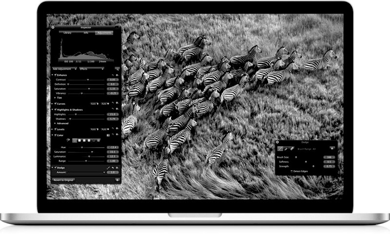

Recently I moved jobs and the new company I work for was nice enough to give me a brand new, high-end, retina Macbook Pro. It's a great machineand I've been reminded how great an operating system OSX actually is. Naturally, I've been looking at my own machine a little differently. It's a Lenovo Thinkpad X230 with an SSD and 16GBs of RAM. Generally it's faster than I'll need for a long time and I've had no real issues with it, but after starting to use the Macbook and the terrific software built with it, I wanted it bad. One evening I started looking at pricing/portability and found one I wanted. I also started looking at software I could use I got excited, about to make a purchase. Then I stopped. I stopped and forced myself to make a list of all the reasons I wanted the Macbook that I couldn't get on my currently machine. I made the list as specific as possible, not just "it's pretty" or "all the apps are better", here's what I came up with.
- Self-Control allows me to completely block websites for hours on end, this gives a nice feeling that the computer is purely for productivity and allows me to focus much better. It helped put my machine at arms length, purely for specific tasks and nothing more.
- Concentrate allows me to define specific tasks that automatically runs apps and quit others. I seem to be able to "wire-in" faster than my general process of having to run X,Y,Z before I can start into something. It promotes single-tasking on my machine.
- Mindful Mynah has been a nice tool that does seem to help me maintain mindfulness during the day.
- A nice background pomodoro app.
- The Productivity focused mail client Mail Pilot has kept my Inbox at zero for the last few weeks.
- Ommwriter is another great tool that allows me to focus on this time specifically on writing.
- An Evernote client. This one is really significant, all of the linux-based clients are severely lacking. I have serious problems with NeverNote screwing up syncs/losing data. The Mac one is really good and just works.
- Things like hiberation/suspend actually work and don't break/screw up on a regular basis.
Anyway I decided that instead of just paying hand over fist for a new Macbook that I'd try to replicate my needs using my existing hardware.
A Taste of Mint
In the end I decided to ditch Debian in lieu of Mint. I wanted something I could setup quickly as I didn't want to invest a lot of time in this. Ubuntu is in theory a good choice, it has better hardware support over Debian and a wider range of apps available. The problem is I greatly dislike Ubuntu for it's privacy invading actions and for unity, which I still think is a terrible UI. I figured Mint made sense. It's definitely appeased my "It's so pretty" lizard brain and it's clearly stolen a bunch of nice UI stuff from Mac. I actually find Cinnamon a really well designed interface. So on the specific tasks, here's how Mint fared.
Self-Control. Self-control for Linux turns out to only half work. It blocks the sites, but then crashes and doesn't automatically unblock them. I shall take a look at fixing this if I stick with Mint. I'll see if I can get by with some shell aliases that run the commands I need instead either.
Thunderbird. As a replacement for Mail Pilot, sucked. Firstly, for some reason when I pointed it at my mail server it wiped ALL of my emails without download them, luckily I had a backup…. Anyway, after some playing around I got it working, but no, Mail Pilot it isn't.
As for Ommwriter, I found something that does the job just not as well, it's called Uberwriter. Whilst I loved Ommwriter's clicky sound as I typed and the calming music it played, Uberwriter does it's job as a focused writing program.
For Evernote, I gave Everpad a go, which is okay. However without Unity on Linux Mint I can't seem to search which makes it a little useless. worked out of the box as did bluetooth, so no complains there.
In the end I'm still undecided, in comparison to the Mac it's not a polished experience and I worry that productivy hits I'll take getting stuff working will cost me more in the long run but for now I'm happy to give it a good honest trial, put some cash aside over the next few months and see how I feel later on. Either way I'm glad I'm making a patient decision over another rushed tech purchase.